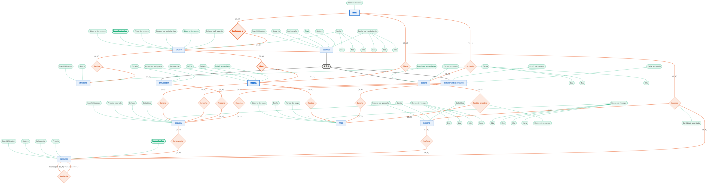

Integrante
Adrian Damas Garnica
- Boleta
- 2023630785
- Grupo
- 3CV4
- Carrera
- Ingeniería en Sistemas Computacionales
Trabajo individual: levantamiento de requerimientos, modelado entidad-relación, documentación del repositorio y publicación de este sitio.
El problema que atiende
Los salones de eventos que ofrecen servicio de banquetes suelen gestionar la toma y el seguimiento de comandas —los pedidos de alimentos y bebidas que hace cada mesa o cada invitado durante un evento— de forma manual, con comandas de papel, hojas de cálculo o aplicaciones genéricas que no fueron diseñadas para este giro de negocio.
Esa forma de operar genera problemas concretos:
- La información de los pedidos se duplica o se pierde entre meseros, cocina y caja.
- No hay registro histórico confiable de qué se sirvió en cada evento, a qué cliente y a qué costo.
- El control de existencias de insumos se lleva de forma aproximada, lo que provoca faltantes o compras innecesarias.
- La cuenta final de cada evento es lenta y propensa a errores, porque depende de conciliar a mano varias comandas en papel.
El caso concreto es un salón que atiende un evento a la vez, con alrededor de veinte mesas, dos o tres cuentas por mesa y de uno a tres pedidos por cuenta. Se manejan anticipos, paquetes contratados y consumo extra a la carta.
El proyecto retoma un desarrollo de un semestre anterior que estaba escrito enteramente en C y guardaba todo en archivos de texto plano, con relaciones mal definidas, escasa normalización y sin reglas de integridad. Por eso el problema no es solo digitalizar la toma de comandas, sino rediseñar con una metodología formal de modelado la base de datos que la sustenta, de modo que represente correctamente eventos, mesas, cuentas, productos, paquetes, personal y pagos.
Modelo entidad-relación extendido
Práctica 2 · Notación de Peter Chen
El modelo extendido expresa lo que el entidad-relación básico dejaba fuera: Mesa y Cuenta como entidades débiles con dependencia de identificación respecto de Evento —porque su numeración se reinicia en cada evento—, la especialización disjunta y total de Usuario en Mesero, Bar/Cocina y Cajero/Administrador, cardinalidades con mínimo y máximo, y la relación ternaria Acuerda, que registra cuánto se pactó de cada producto de cada paquete para un evento concreto.

El análisis completo —entidades, atributos, cardinalidades, restricciones y justificación de cada decisión— está en ModeloEntidadRelaciónExtendido.md.
Diagrama relacional
Práctica 3
Pendiente
El diagrama relacional corresponde a la Práctica 3, que aún no se entrega. Cuando el modelo exista, su imagen ocupará este espacio, junto al EER del que se deriva.
Lo que va aquí: el paso del modelo conceptual al lógico —las tablas con sus llaves primarias y foráneas, la resolución de la jerarquía de Usuario, las claves compuestas de Mesa y Cuenta, y las tablas puente de las relaciones Acuerda e Incluye.
Repositorios
Repositorio del equipo
Todo el trabajo del curso: documentación, modelos, evidencias y este sitio.
github.com/Actronix09/Desarrollo-Proyecto-Final-BDFork del proyecto asignado
Monitoreo de obras públicas municipales: almacén de datos dimensional con PostgreSQL, API y visor de mapa. Es el proyecto que se levantó y analizó en la Práctica 2.
github.com/Actronix09/PublicMunicipalWorks_DWHRepositorio original del asignado
Fuente de la que se hizo el fork, de gabrielhuav.
github.com/gabrielhuav/PublicMunicipalWorks_DWHDocumentación del repositorio
Todo el material del curso vive en el repositorio, escrito en Markdown.
Proyecto propio
- Entrevista con el cliente Eventos, mesas, menú, flujo de comandas, cobros, roles y reportes.
- Modelo entidad-relación extendido Entidades, relaciones con cardinalidades, entidades débiles, jerarquía y restricciones.
- Documento de la Práctica 1 (PDF) Introducción, marco teórico y caso de estudio.
Proyecto asignado
- Levantamiento del proyecto asignado Fork, clonación, contenedores, poblado de la base y consultas directas.
- Modelo EER del proyecto asignado Reconstrucción del modelo a partir del esquema operativo.
- Propuesta de mejora Trazabilidad ciudadana, criterio de sobreprecio y verificación del avance físico.
- Análisis de los tres artículos Sismos, datos abiertos de agua y almacén geoespacial de obra pública.
Entorno y control de versiones
- Control de versiones (Git) Sistema gestor de versiones, definiciones y flujo de trabajo por ramas.
- Evidencias de Git y pull requests Estructura de ramas, pull requests e historial del repositorio.
- Contenedores en Docker Imagen, contenedor, volumen y puerto publicado.
- Persistencia del volumen de Docker Prueba de que los datos sobreviven a la eliminación del contenedor.